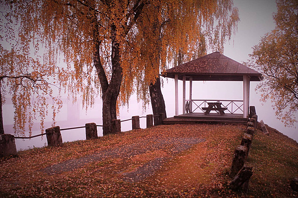

Six works on the residue of attention — the quiet interval between seeing and forgetting.

An afterimage is what remains when the source is gone — the eye's insistence that something was there.
Across photography, painting and time-based media, nothing here is loud. Everything asks to be looked at twice.
Afterimage is curated by Hannah Reyes and presented across the ground-floor galleries of Lindgren Hall. The exhibition is free to enter and open to all.
Lindgren Hall, 4 Carriage Row, London E2
Wed — Sun, 11:00 — 18:00 · Free entry
visit@lindgrenhall.org